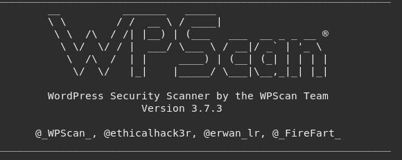
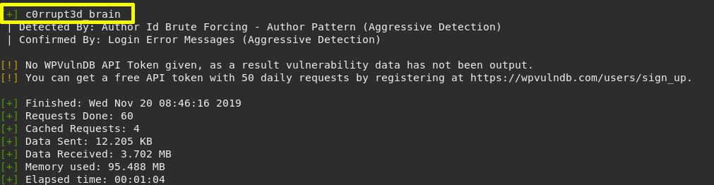

With this command, we are telling the wpscan to enumerate(-e) all themes(at), all plugins(ap) installed on the wordpress site. And finally, all the users(u) that might be logged in on the WordPress Site.
$ wpscan --url http://192.168.12.18/wordpress/ -e at -e ap -e u
Output:  
There is a vulnerable plugin c0rrupt3d_brain where we can attack via bruteforce and get a password to log in.